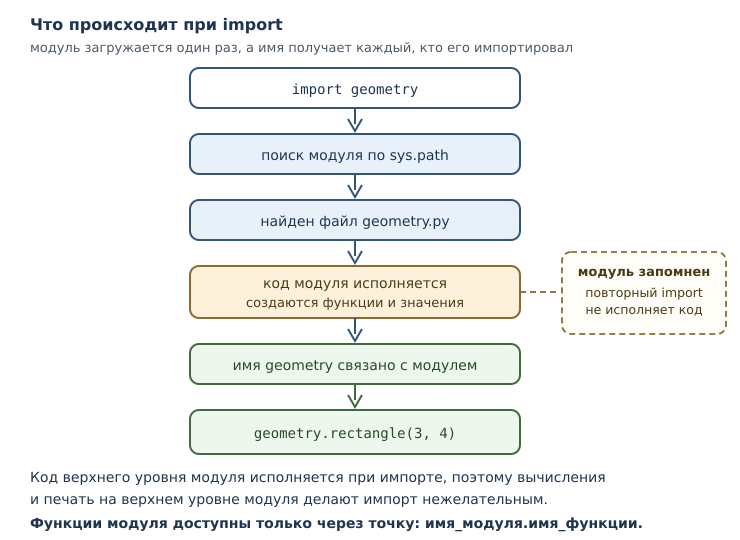
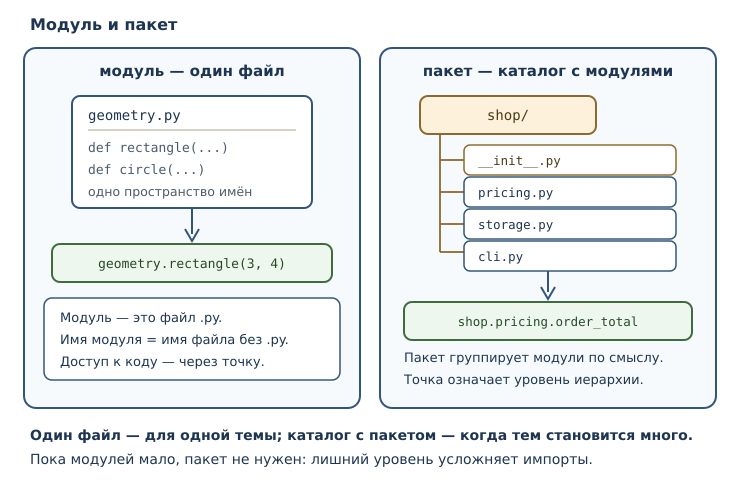

Модули, пакеты и импорты
Как организовывать код в модули, что такое пакет, namespace и точка входа программы.
В этой главе
До этой главы вся программа жила в одном файле. Для учебных задач этого хватало, но у одного файла есть предел: когда функций становится несколько десятков, найти нужную труднее, чем написать новую. Кроме того, один и тот же код нужен в разных программах — а копировать файл целиком бессмысленно.
Модуль решает эту задачу так же, как функция решала задачу повторения: даёт
имя части программы. Файл geometry.py становится модулем geometry, его
функции доступны из других файлов, а внутри модуля действует собственное
пространство имён. Python поставляется с большой стандартной библиотекой
таких модулей, и умение ими пользоваться отличает новичка от человека, который
работает продуктивно.
В этой главе появятся модули, пакеты, инструкция import и точка входа программы — всё, что нужно, чтобы перейти от отдельных файлов к проекту.
9.1 Что вы сможете после этой главы
К концу главы вы будете уметь следующее.
- разбивать программу на модули и импортировать их;
- объяснять разницу между
import moduleиfrom module import name; - понимать, что такое пространство имён и почему одинаковые имена не мешают;
- находить нужные инструменты в стандартной библиотеке;
- собирать пакет из нескольких модулей;
- отделять библиотечную часть файла от запуска через точку входа.
9.2 Модуль — это файл
Модуль — файл .py, содержимое которого образует отдельную область имён и
может быть импортировано другим кодом. Имя модуля — имя файла без расширения.
Файл geometry.py даёт модуль geometry; файл report_utils.py — модуль
report_utils.
Внутри модуля можно писать всё то же, что и в обычном файле: функции, переменные, инструкции. Разница в том, как этот файл используется. Посмотрим на модуль с двумя функциями:
"""Простые вычисления площадей."""
def rectangle(width, height):
"""Вернуть площадь прямоугольника."""
return width * height
def circle(radius):
"""Вернуть площадь круга."""
return 3.141592653589793 * radius ** 2
Если сохранить этот текст в файл geometry.py, рядом можно создать второй файл
и воспользоваться первым:
import geometry
print(geometry.rectangle(3, 4))
print(geometry.circle(2))
Запустим второй файл из той же папки:
$ python use_geometry.py
12
12.566370614359172
Что произошло: интерпретатор нашёл файл geometry.py, выполнил его код сверху
вниз (определения функций при этом только создали функции) и связал имя
geometry с модулем. После этого функции модуля стали доступны через точку.
Важно понимать: код модуля верхнего уровня исполняется при импорте. Именно поэтому в модулях не принято писать вычисления прямо на верхнем уровне — иначе они выполнятся при каждом импорте. Всё, что должно произойти при запуске программы, помещают в функцию и вызывают её из точки входа.
9.3 Инструкция import
Инструкция import загружает модуль и связывает его имя в текущей области
видимости. После import math имя math становится доступным, а через точку
открываются имена внутри модуля.
import math
print(math.__name__)
print(math.sqrt(16))
print(round(math.pi, 2))
math
4.0
3.14
Здесь видно три вещи. Во-первых, math — обычный объект, у которого есть
атрибут __name__. Во-вторых, имена внутри модуля доступны через точку:
math.sqrt. В-третьих, модуль приносит не только функции, но и значения:
math.pi — число.
Модуль можно переименовать при импорте, если его имя длинное или конфликтует:
import math as m
print(m.sqrt(25))
print(round(m.pi, 3))
5.0
3.142

Повторный импорт того же модуля не выполняется заново: Python запоминает уже
загруженные модули и при повторном import просто возвращает готовый.
import math
import math
print(math.sqrt(4))
2.0
Это не оптимизация «на всякий случай», а часть модели: модуль загружается один раз, а имя получает каждый, кто его импортирует. Подробнее о кэше модулей — в главе 33, когда речь пойдёт об устройстве проекта.
9.4 from … import …
Вторая форма импорта переносит имена из модуля прямо в текущую область
видимости. После from math import sqrt доступна функция sqrt без префикса.
from math import sqrt, pi
print(sqrt(2))
print(round(pi, 3))
1.4142135623730951
3.142
Разница между формами не косметическая:
| Запись | Что появляется в текущей области | Как обращаться |
|---|---|---|
import math |
имя math |
math.sqrt(2) |
from math import sqrt |
имя sqrt |
sqrt(2) |
import math as m |
имя m |
m.sqrt(2) |
Первая форма безопаснее: имена модуля остаются внутри его пространства имён, и вы всегда видите, откуда взялась функция. Вторая форма короче, но добавляет имена в ваш код — а значит, может столкнуться с уже существующими.
Столкновение реально и опасно тем, что происходит молча:
from math import sqrt
def sqrt(n):
return n
print(sqrt(16))
16
Импортированная функция была заменена собственной, и sqrt(16) теперь не
извлекает корень. Python не считает это ошибкой: имя — это имя, последнее
связывание побеждает. Отсюда правило: после from ... import ... не
переопределяйте импортированные имена, а если это необходимо, импортируйте
модуль целиком.
Третья форма — from math import * — переносит все имена модуля. Её
избегают: невозможно понять, откуда в коде появилось имя, и какие имена
перезаписаны. Явное лучше неявного.
9.5 Пространство имён
Пространство имён — отображение имён в объекты. У модуля и функции своё пространство: одно и то же имя в разных пространствах обозначает разные вещи и не конфликтует.
Вы уже встречались с этим: локальная область видимости функции — тоже
пространство имён, и x в одной функции не имеет отношения к x в другой.
Модуль добавляет ещё один уровень: math.sqrt и cmath.sqrt — разные функции
с одинаковым коротким именем.
import math
print(math.__name__)
print(hasattr(math, "sqrt"))
print(hasattr(math, "sqrt2"))
math
True
False
Функция hasattr проверяет, есть ли у объекта атрибут с таким именем. Обратите
внимание: sqrt2 в math нет, и это не ошибка — просто такое имя в этом
пространстве не определено.
Практическое следствие: полное имя math.sqrt однозначно. Если в программе
несколько модулей, их имена и составляют ваше пространство имён верхнего
уровня. Отсюда совет: не называйте свои модули так же, как модули стандартной
библиотеки. Файл math.py в папке проекта перекроет стандартный math, и
искать причину странного поведения можно долго.
9.6 Стандартная библиотека
Стандартная библиотека — поставляемый с Python набор модулей, не требующий
установки. В неё входят math, random, json, pathlib, itertools и
многие другие.
Несколько примеров того, что там уже есть:
- математика: корни, тригонометрия, наибольший общий делитель;
- случайные числа с возможностью зафиксировать seed;
- работа с файлами и путями;
- форматы данных: JSON, CSV;
- даты и время;
- инструменты для тестирования и отладки.
Проверим пару возможностей:
import math
print(math.floor(3.7))
print(math.ceil(3.2))
print(math.gcd(84, 36))
3
4
12
Умение искать в стандартной библиотеке — навык, который окупается быстрее любого другого. Начинайте с вопроса «неужели для этого нет готового?» и смотрите официальную документацию Python. Большая часть повседневных задач уже решена, и написанный вручную код чаще содержит ошибки, чем проверенный библиотечный.
Важно различать уровни: стандартная библиотека входит в поставку Python, но не в сам синтаксис языка. Её модули обновляются вместе с версией Python, и часть из них может отсутствовать в других реализациях.
9.7 Пакеты
Пакет — каталог с модулями и (обычно) файлом __init__.py, образующий
иерархическое пространство имён. Пакет позволяет группировать модули по смыслу,
а не сваливать всё в одну папку.
Типичная структура небольшого проекта:
shop/
├── __init__.py
├── pricing.py
├── storage.py
└── cli.py
Обращаться к модулям пакета можно через точку:
from shop.pricing import order_total
from shop import storage
print(order_total(250, 3))
Здесь shop — пакет, shop.pricing — модуль внутри пакета. Точка означает
иерархию: сначала пакет, затем модуль, затем имя внутри модуля.
Файл __init__.py отмечает каталог как пакет. В простейшем случае он пуст; в
нём можно выполнить инициализацию пакета, но злоупотреблять этим не стоит:
импорт пакета не должен запускать тяжёлые действия.

Современный Python допускает и пакеты без __init__.py — они называются
пакетами пространства имён. Для учебных проектов проще придерживаться
классической схемы с __init__.py: она явнее и привычнее для инструментов.
9.8 Точка входа и проверка name == "main"
Модуль можно запустить двумя способами: как программу и как библиотеку. Это порождает вопрос: какой код должен выполняться в каждом случае?
Ответ даёт атрибут __name__. Когда файл запускают напрямую, Python
присваивает этому имени строку "__main__". Когда файл импортируют, __name__
равен имени модуля.
print(__name__)
__main__
Проверка __name__ == "__main__" — идиома, которая позволяет файлу совмещать
обе роли. Код внутри этой проверки выполняется только при прямом запуске.
def main():
print("главная функция запущена")
if __name__ == "__main__":
main()
главная функция запущена
Смысл конструкции в том, что main() вызывается не всегда, а только когда файл
запущен как программа. Если этот же файл импортировать из другого, функция
main станет доступна, но не выполнится.
Точка входа — место, с которого начинается исполнение программы при
запуске. В скрипте это первая инструкция файла; с главной функцией — вызов
main(). У библиотечного модуля точки входа нет вовсе, и это правильно: код,
который начинает работать при импорте, делает модуль непредсказуемым.
Проверим вторую ветвь логики на модели: представим, что модуль импортирован и
его имя не равно "__main__".
module_name = "shop.pricing"
if module_name == "__main__":
print("прямой запуск: код выполняется")
else:
print("модуль импортирован: код пропущен")
модуль импортирован: код пропущен
Так модуль становится и библиотекой, и программой одновременно. Это стандарт
для консольных утилит: файл cli.py содержит функции, которые можно
импортировать в тестах, и блок с точкой входа для запуска.
9.9 Почему sys.path — не место для хаков
Когда вы пишете import math, Python ищет модуль в нескольких местах. Список
этих мест хранится в sys.path — списке путей, который просматривается по
порядку. В него входят каталог запускаемой программы, каталог установленных
пакетов и некоторые другие места.
Соблазн новичка — дописать нужный каталог в sys.path прямо в коде:
import sys
sys.path.insert(0, "../my_libs") # так делать не стоит: путь зависит от машины
import my_lib
Так делать не стоит, и вот почему.
- Зависимость становится невидимой. По коду не понять, что программа требует внешнего каталога с библиотекой; на другой машине это выяснится только при запуске.
- Порядок путей непредсказуем. Добавление каталога в начало списка может перекрыть модуль стандартной библиотеки или установленный пакет — и ошибка проявится в совершенно другом месте.
- Ломается упаковка. Инструменты установки и тестирования ожидают, что зависимости объявлены, а не подложены по пути.
- Ломается воспроизводимость. Программа, работающая на вашей машине, перестаёт работать в CI и у коллеги.
Правильные способы решить ту же задачу:
- оформить код как пакет и установить его (
uv,pip) — тогда он найдётся сам; - запускать программу из корня проекта как модуль:
python -m shop.cli; - для локальной разработки использовать управляемое окружение, а не правку
sys.pathв коде.
Есть и обратный случай: модуль не находится, хотя файл рядом. Почти всегда причина в том, что запускается не тот файл или не из той папки. Проверять нужно структуру проекта, а не добавлять пути.
9.10 Собираем вместе
Разделим маленькую программу на два модуля: вычисления и запуск.
Модуль pricing.py содержит только функции — его удобно импортировать и
тестировать:
"""Расчёты для заказа."""
def order_total(price, count, discount=0):
"""Вернуть итог заказа в целых рублях."""
total = price * count
return total - total * discount // 100
Модуль cli.py отвечает за общение с человеком и запуск:
"""Точка входа консольной программы."""
from pricing import order_total
def main():
amount = order_total(250, 3, 10)
print(f"К оплате: {amount} рублей")
if __name__ == "__main__":
main()
Запуск:
$ python cli.py
К оплате: 675 рублей
Разделение дало три выгоды. Вычисления не зависят от ввода и вывода, поэтому
их легко проверить. Файл pricing.py можно импортировать в другой программе.
А cli.py можно запустить и получить результат, не заглядывая внутрь.
9.11 Типичные ошибки
- Называть свой модуль как модуль стандартной библиотеки. Файл
math.pyперекроет стандартныйmath, и импорт в других местах начнёт вести себя странно. - Выполнять работу на верхнем уровне модуля. Код, который печатает или читает файлы при импорте, срабатывает каждый раз, когда модуль импортируют.
- Использовать
from module import *. Непонятно, откуда взялись имена, и какие из них перезаписаны. - Переопределять импортированное имя. Своя функция
sqrtмолча заменит импортированную. - Забыть
__init__.pyв классическом пакете. В Python 3.3+ каталог без этого файла может работать как пакет пространства имён, но поведение зависит от структуры проекта и инструментов; в классической схеме__init__.pyнужен, чтобы пакет был явным. - Импортировать файл, а не модуль.
import geometry.py— синтаксическая ошибка; имя модуля пишется без расширения. - Править
sys.pathв коде. Зависимость становится невидимой, а поведение зависит от машины. - Путать точку входа с точкой, где объявлена функция. Точка входа — место запуска, а не место определения.
- Ожидать, что при импорте выполнится
main(). Без проверки__name__ == "__main__"он выполнится; с проверкой — нет.
9.12 Упражнения
1. Имя модуля
Файл называется text_tools.py. Как называется модуль, который он образует?
Как импортировать из него функцию normalize двумя способами?
2. Две формы импорта
Объясните разницу между import math и from math import sqrt. Как в каждом
случае вызвать корень из 9? Проверьте оба варианта программой.
3. Прогнозирование
Что выведет программа? Объясните, почему два вызова дают разные значения.
import math
from math import floor
def floor(n):
return round(n)
print(floor(2.9))
print(math.floor(2.9))
4. Пространство имён
Почему math.__name__ возвращает math, а не имя функции? Что это говорит о
модуле как об объекте?
5. Стандартная библиотека
Найдите в документации Python модуль, который умеет округлять числа вверх и
вниз. Напишите программу, которая печатает math.ceil(2.1) и math.floor(2.9),
и объясните результаты.
6. Пакет
Дан каталог:
tools/
├── __init__.py
├── text.py
└── files.py
Напишите две строки импорта: функцию clean из модуля text и модуль files
целиком. Как обращаться к функции после каждого импорта?
7. Точка входа
Почему в примере ниже при импорте этого файла ничего не напечатается, а при запуске напечатается?
def main():
print("работаю")
if __name__ == "__main__":
main()
8. Исправление ошибки импорта
Код падает:
ModuleNotFoundError: No module named 'pricing'
Файл pricing.py лежит в той же папке, что и запускаемый файл. Назовите две
возможные причины и способ проверки.
9. Библиотека и программа
Перепишите файл так, чтобы его функции можно было импортировать, а запуск печатал результат:
def double(n):
return n * 2
print(double(21))
10. Мини-задача: разбиение на модули
Опишите структуру из трёх файлов для программы «конвертер температур»: модуль
с формулами, модуль с функциями вывода и файл запуска. Для каждого файла
напишите, что в нём лежит и есть ли в нём проверка __name__ == "__main__".
9.13 Проверка понимания
- Что такое модуль и как его имя связано с именем файла?
- Когда исполняется код верхнего уровня модуля?
- Чем
import moduleотличается отfrom module import name? - Почему
from module import *считается плохой практикой? - Что такое пространство имён модуля?
- Что такое пакет и зачем нужен
__init__.py? - Почему при импорте файла
__name__не равно"__main__"? - Что такое точка входа программы?
- Почему не стоит править
sys.pathв коде?
9.14 Что дальше
Вы умеете делить программу на модули и запускать её через точку входа. Но до сих пор любая ошибка — деление на ноль, неверный ввод, отсутствующий файл — обрывала программу. Дальше появятся исключения: механизм, который позволяет сообщать об ошибках и обрабатывать их, не теряя управление.